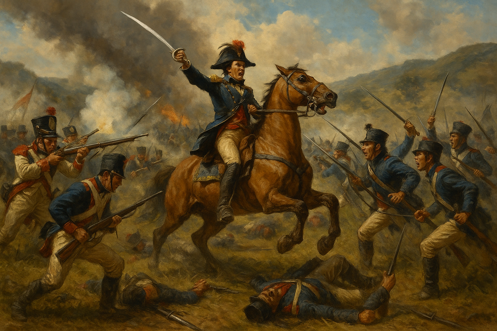
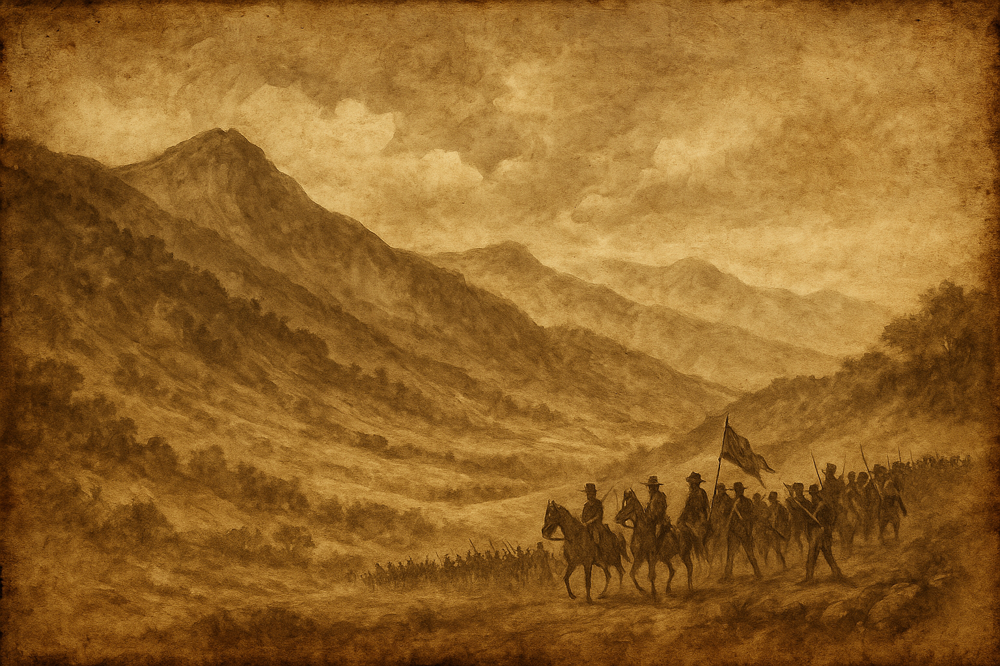
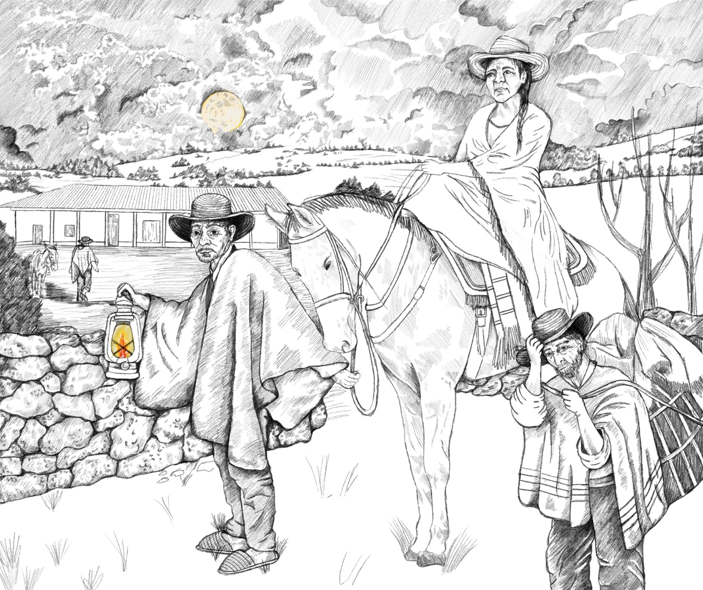
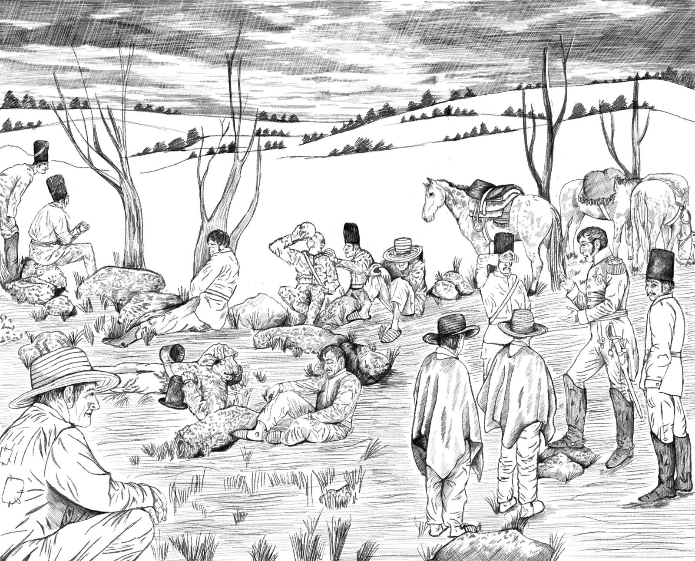

DÍAS PREVIOS


En los primeros días de agosto de 1819, luego de la batalla del pantano de Vargas, el ejército patriota tomó el camino que de Paipa conduce a Toca y Chivatá, para dirigirse de forma estratégica a la ciudad de Tunja, evitando la vía principal para no ser detectados por los espías realistas.

El 5 de agosto, al enterarse del movimiento de los patriotas, el ejército realista marchó por el camino real de Paipa a Tunja en medio de la lluvia. Atravesaron el páramo, cruzaron por Cómbita y al día siguiente instalaron su campamento en el caserío de Motavita. Desde allí, el general Barreiro fue alertado por espías sobre la cercanía del enemigo.
Mientras tanto, al pasar por Toca, el clérigo patriota Andrés Gallo informó a su familia sobre el avance del ejército. Aquella noche, su madre, doña Juana Velasco de Gallo, partió con dos sirvientes hacia Tunja, llegando al amanecer del día siguiente.

La noticia del avance realista generó alarma entre la población. A pesar de las lluvias, los habitantes de Cómbita y Motavita huyeron rápidamente. Se llevaron los animales, cosechas y alimentos, dificultando el abastecimiento del ejército realista.
Por su parte, Juan Loño el gobernador de Tunja, con el batallón Tercero de Numancia, caballería, municiones y tres piezas de artillería, abandonó la ciudad y se dirigió a Motavita, donde se uniría al cuartel realista del general Barreiro.
Al ingresar a Tunja, la vanguardia patriota tomó control de 600 fusiles, cobijas, alpargatas, telas y suministros médicos que habían pertenecido a los realistas. Fue un golpe clave que fortaleció a las tropas antes del inminente enfrentamiento de la Batalla de Boyacá.
La población civil de Tunja y de pueblos cercanos se volcaron en apoyo al ejército patriota; entregaron frutas, amasijos y otras comidas de la región, además de caballos, ganado y herramientas necesarias para la causa libertadora.
Desde las alturas de Motavita, los realistas divisaron un grupo de infantería patriota asentado en la cima de la Ermita de Chiquinquirá, confirmando que el enemigo se posicionaba estratégicamente.
El general Bolívar llegó a Tunja con el grueso del ejército. Fueron recibidos con emoción y entusiasmo, reconociendo su labor y alentándolos a continuar. Hombres de todas las clases sociales se enlistaron, dando origen al batallón de Tiradores.
La situación realista era precaria, pues además del hostigamiento que recibían de las guerrillas patriotas en los caminos, las tropas estaban agotadas, sus ropas y armas mojadas por la lluvia, y los víveres se agotaban. Intentaban secar sus pertenencias usando el calor de las fogatas en el campamento.

Conmovidas por la precariedad del ejército patriota, Juana Velasco de Gallo y un grupo de mujeres tunjanas organizaron una gran labor de apoyo: confeccionaron más de 2.000 camisas. Incluso donaron parte de su ropa para vestir a los soldados.
Al respecto el general Anzoátegui escribió a su esposa: "…auxiliado eso sí por el patriotismo y el entusiasmo de los patriotas de la provincia de Tunja, especialísimamente por las mujeres que, ¡no lo creerás! Se despojaron realmente de su ropa para hacer con ella camisas, calzoncillos y chaquetas para nuestros soldados y de todo lo que tenían para socorrernos. Fue esta una resurrección milagrosa. Nos volvió la vida, el valor, y la fe...".
En honor a la causa, Juana Velasco de Gallo y sus allegadas ofrecieron una cena de bienvenida al estado mayor del ejército patriota. Una velada que enaltecía su labor en la causa independentista.
Terminada la cena, Bolívar decidió enviar al espía Julián Garzón “el Crespo", amigo del coronel español Juan Loño, al campamento de Barreiro haciéndole creer que el ejército patriota se quedaría en Tunja descansando.
Julián partió con un peón y una carga de regalos: pan, vino, dulces y aguardiente. Fue recibido con amabilidad en el campamento realista. Barreiro convencido por la desinformación, declaró: “…que Bolívar siga en Tunja, que yo mañana marcho hacia Santafé.” Sin saberlo, acababa de caer en la trampa estratégica que sellaría su derrota.
De regreso, Garzón le informó a Bolívar sobre las precarias condiciones y el desánimo en las filas realistas, así como de la intención de Barreiro de avanzar a Santafé para reunirse con el virrey Sámano para reforzar las tropas y enfrentar al ejército patriota, ante esta información Bolívar decide salir al encuentro de los realistas en el paso por el río Boyacá para obligarlos a dar la batalla.